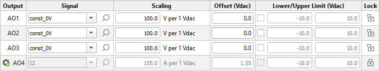
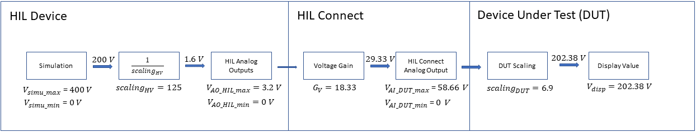
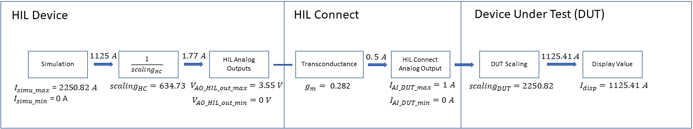

How to scale simulated signals for a C-HIL interface
This how to guide explains scaling, which is a crucial step in interfacing a HIL device with an external device under test (DUT), such as a controller, relay, PLC, etc.
Introduction
When setting up a Controller Hardware-In-the-Loop (C-HIL) simulation environment, a key step which follows the physical connection of the HIL device to the DUT, usually done via an interface board (or an interface device), is adjusting the interface related settings of the model. For analog outputs (AOs) this means mapping the necessary signals from the model to the appropriate AO pins of the HIL device and setting the correct scaling and offset. When possible, it is a good practice to limit the output voltages of the HIL device according to the values supported by the controller.
In this guide, signal scaling will be presented for two different interfacing scenarios. The first one considers DUTs for which the voltage and current capabilities of the HIL device are sufficient, and interfacing is done through an interface board (e.g. Launchpad interface for TI LaunchPad controllers). This will be covered in the Interfacing with Interface Boards section of this guide.
For DUTs which require higher voltage or current levels than what the HIL device can provide such as relays and some types of controllers, interfacing is done through a HIL Connect interface device. This second scenario is covered in the Interfacing with HIL Connect chapter.
In general, the rated output voltage range of the analog outputs of the HIL device is -10 V to +10 V. More information about analog and digital IO voltage levels of each HIL Simulator device is documented in their respective IO Voltage Levels section.
Scaling for Analog Outputs
Analog output settings can be defined in two ways:
- Using the Initial Settings component in Schematic Editor
- In the Model Settings Dock in HIL SCADA, under the Model Settings Tab in Output Controls → Analog Outputs
Using one of the two previously mentioned methods, you can assign a signal from the simulation to a specific AO of the HIL device and set its scaling, offset, and upper and lower limits. When using HIL SCADA, you can save the Model Settings as a .runx file.

When determining the scaling factor, it is important to consider the largest measured value which can appear in the simulation and needs to be seen by the DUT – an example of this would be to consider transient events, where we can have simulation values significantly higher than nominal ones. The scaling factor must ensure that these transient values, or any other large (relative to steady state) signals of interest produced by simulation, do not reach the HIL device saturation limits and end up clipped at the AO.
Scaling for Analog Inputs
Some C-HIL applications require feeding analog signals from the controller to the plant simulated on the HIL device. Analog inputs in this case may also require scaling, where the voltage levels on the analog inputs of the HIL device are scaled to be appropriately represented in the simulation.
- Using the Analog Input component
- Using Externally controlled sources
The Analog Input component is a Signal Processing component which outputs the value that is collected from the HIL device analog inputs to the simulation. In its properties, you can set the analog input pin that will receive the signal, as well as the gain (scaling) and the offset. The value output from this component in the simulation is given by:
The Externally Controlled Source is essentially implemented the same as an Analog Input component, but with a few advantages. These components run at the simulation step of circuit solver rather than the slower rate of the signal processing components. Therefore, they provide a higher fidelity analog signal. Also, gain and offset parameters can be tuned during simulation runtime.
Interfacing with Interface Boards
Scaling for Low Voltage Outputs
The scaling required for an AO signal can be calculated considering the voltage range of the variable in the simulation and the voltage range of the HIL device AOs. Scaling can be defined by the following equation:
Where:
- Vsimu_max - maximum value of the simulation variable;
- Vsimu_min - minimum value of the simulation variable;
- VAO_HIL_max – maximum voltage at the analog output of the HIL device;
- VAO_HIL_min – minimum voltage at the analog output of the HIL device.
It is important to note that VAO_HIL_max and VAO_HIL_min are not necessarily the rated values of the analog output voltages of the HIL device, but the values chosen by the user to match the interface board input and controller specifications. We can calculate the scaling directly from the controller input specifications using the following equation:
Where:
- Vsimu_max - maximum value of the simulation variable;
- Vsimu_min - minimum value of the simulation variable;
- VAI_CTRL_max – maximum voltage at the analog input of the controller;
- VAI_CTRL_min – minimum voltage at the analog input of the controller;
- Gv – voltage gain at the interface board.
The gain at the interface board is a parameter defined at the hardware level of the board. It is a part of its specification and can vary for different interface boards. It can be represented by the following equation:
Where:
- VAO_INT_max - maximum voltage at the analog output of the interface board;
- VAO_INT_min - minimum voltage at the analog output of the interface board;
- VAI_INT_max – maximum voltage at the analog input of the interface board;
- VAI_INT_min – minimum voltage at the analog input of the interface board.
In case no interface board is used, Gv = 1.
In addition to scaling, an offset may be required for both AC and DC signals. In case of AC signals, the offset is usually used to represent the negative half cycle as a set of positive values, so that the signal can be fully represented by the controller. In case of DC signals, a use case can be seen in the Battery Charger Dual Active Bridge (DAB) with a TI LAUNCHXL-F28379D Controller example: since the measured current I2 in this example can change its direction (and therefore, its sign), offset is used so that the current can be represented by the controller for both of its directions.
To calculate offset, the following equation can be used:
Where:
- voltage measured at the analog outputs of the HIL device that represents 0 in the simulation.
Two interfacing examples are presented in the sequence:
A) Considering the use of a TI LAUNCHXL-F28379D and the HIL TI LaunchPad Interface, the board does not include gain or offset in the signals (Gv = 1), such that VAI_INT_max = VAI_CTRL_max = 3 V and VAI_INT_min = VAI_CTRL_min = 0 V. Therefore, the analog outputs of the HIL device should be defined accordingly, that is, VAO_HIL_max = 3 V and VAO_HIL_min = 0 V. Assuming that in the simulation we have a sinusoidal signal with amplitude equal to 60 V, one has that VAO_simu_max = 60 V and VAO_simu_min = -60 V. The scaling and offset can be calculated as follows:
B) Considering the use of a DSP DIM100 card (TI C2000 family and the HIL TI uGrid DSP interface, the board input specifications are VAI_INT_max = 5 V and VAI_INT_min = -5 V while VAI_CTRL_max = 3 V and VAI_CTRL_min = 0 V. This means that the board has a voltage gain Gv = 0.3 and it also generates the appropriate offset. In order to match the analog output of HIL device with the input of the interface board, we can define VAO_HIL_max = 5 V and VAO_HIL_min = -5 V. Assuming that in the simulation we have a sinusoidal signal with amplitude equal to 60 V, one has that VAO_simu_max = 60 V and VAO_simu_min = -60 V. The scaling and offset in this case can be calculated as follows:
Interfacing with HIL Connect
Scaling for High Voltage outputs
DUTs are standardized in terms of which voltage levels they can receive at their analog inputs. Input voltages for devices such as relays and some types of controllers typically range from 100 V to 250 V [rms]. As the voltage levels demanded by these types of DUTs exceed the voltage capabilities of the HIL device, the HIL Connect is the interface used to appropriately condition the analog output voltages of the HIL device to the higher voltage levels required by the DUT. Information about analog output specification of the HIL Connect is given in Table 1.
| Type | Range (peak) |
|---|---|
| Analog Output | ±10 V or ±20 mA |
| High Voltage | ±183.3 V |
| Current Output | ±20 mA |
As mentioned in the Introduction, the rated voltage range of the HIL device analog outputs is from -10 V to +10 V. Therefore, we still need to scale the simulated voltages appropriately. Scaling can be calculated by considering the ranges of both the simulation variable and the DUT analog input voltage specifications:
Where:
- scalingHV – scaling factor for high voltage outputs;
- Gv – voltage gain of the HIL Connect;
- Vsimu_max - maximum value of the simulation variable;
- Vsimu_min - minimum value of the simulation variable;
- VAI_DUT_max – maximum voltage at the analog input of the DUT;
- VAI_DUT_min – minimum voltage at the analog input of the DUT.
The voltage gain of the HIL Connect is a parameter defined at the hardware level of the HIL Connect and it is a part of its specification. Considering the High Voltage Output of the HIL Connect, it can be calculated as follows:
Where:
- VHIL_Connect_peak - peak value of voltage at the analog output of the HIL Connect, defined by its hardware specification;
- VHIL_Device_peak - peak value of the analog output of the HIL device (10 V).
To appropriately represent the signals at the high voltage analog inputs of the DUT, the internal scaling factor of the DUT also needs to be set. The process of configuring this scaling factor depends on the type of DUT and its manufacturer. After configuration, the voltage value shown on the DUT’s HMI (human machine interface) display should be equal to the simulated voltage.
An example for setting up the scaling for High Voltage outputs is shown in Figure 2.

Where:
- scalingDUT – scaling factor of the DUT;
- Vdisp – the value of voltage displayed on the DUT.
Scaling for Low Voltage outputs
In testbeds where the DUT is interfaced via HIL Connect but high-voltage outputs are not required, a feedthrough from the HIL device to DUT low voltage inputs is provided using voltage buffer channels inside the HIL Connect. In that case, the simulated voltages still need to be scaled in the software, as shown previously, in the Interfacing with Interface Boards section of the guide.
Scaling for High Current outputs
DUTs are standardized in terms of which currents they can receive at their analog inputs. Input currents for devices such as relays and some types of controllers typically range from 1 A or 5 A [rms].
As the current values demanded by these DUTs exceed the current capabilities of the HIL device, an interface is needed between the DUT and the HIL device. That interface is once again the HIL Connect. It has VCCSs (Voltage Controlled Current Sources) which enable us to provide the desired currents at the DUT input from the output voltages of the HIL device.
To do so, the currents measured in the simulation are represented as voltage values at the HIL device AOs. Therefore, we need to scale the signals appropriately. Scaling can be calculated by considering the ranges of both the simulation variable and the DUT analog input current specifications:
Where:
- scalingHC – scaling factor for high current outputs;
- gm - transconductance of the HIL Connect;
- Isimu_max – maximum value of the simulation variable;
- Isimu_min – minimum value of the simulation variable.
- IAI_DUT_max – maximum current at the analog input of the DUT;
- IAI_DUT_min – minimum current at the analog input of the DUT.
The transconductance of the HIL Connect is a parameter defined at the hardware level of the HIL Connect and it is part of its specification. Considering the High Current Output of the HIL Connect, it can be calculated as follows:
Where:
- IHIL_Connect_peak - peak value of current at the analog output of the HIL Connect, defined by its hardware specification
- VHIL_Device_peak - peak value of the analog output of the HIL device (10 V).
Finally, to appropriately represent currents at the high current analog inputs of the DUT, the internal scaling factor of the DUT also needs to be set. The process of configuring this scaling factor depends on the type of DUT and its manufacturer. After it is done, the measured current shown on the DUT’s HMI display should be equal to the simulated current. An example for setting up the scaling for High Current outputs is shown in Figure 3.

Where:
- scalingDUT – scaling factor of the DUT;
- Idisp – the value of current displayed on the DUT.